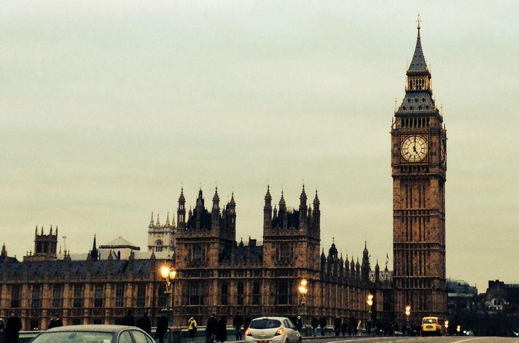
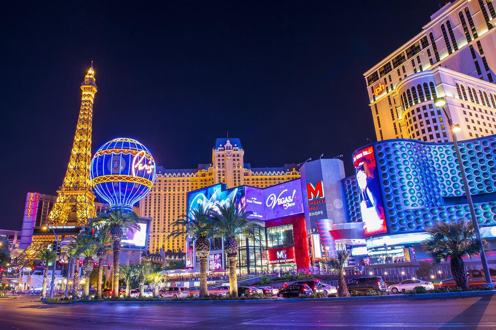
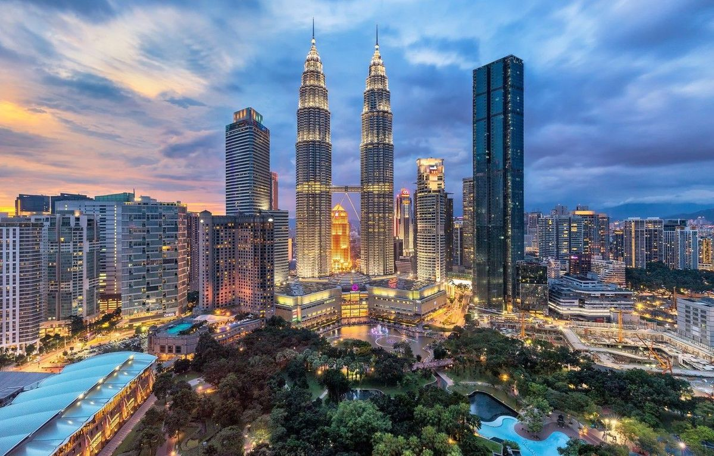
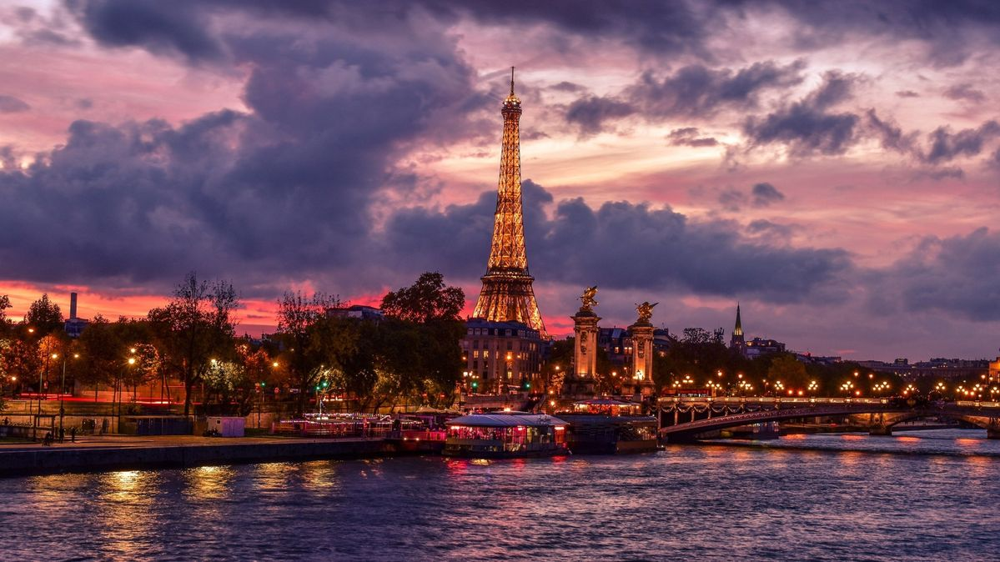

Londres
La capital del Reino Unido, conocida por su historia rica, arquitectura impresionante y museos de renombre mundial.
Ver más
Brasil
País más grande de América del Sur, conocido por su biodiversidad, cultura rica y playas hermosas.
Ver más
Las Vegas
Ciudad de luces y entretenimiento, famosa por sus casinos, espectáculos y vida noturna vibrante.
Ver más
Malasia
País insular en el sudeste asiático, conocido por su diversidad cultural, arquitectura colonial y paisajes tropicales.
Ver más
París
La ciudad de la luz, famosa por su arquitectura neoclásica, museos de renombre y su ambiente romántico.
Ver más
Tokio
La capital de Japón, conocida por su mezcla única de tradición y modernidad, con lugares históricos y una vibrante vida urbana.
Ver más